WOLF has extensive flexibility in controlling your dictionary output.To accommodate this feature, you
create one (or a series) of output templates. You can then use the WOLF dropdown menu to
select which output format is desired. An example with four templates is shown to the left. WOLF will continue to use that selection until you make a different choice.
Launch the template dialog by selecting the icon () which appears on the left wall of the WOLF application.
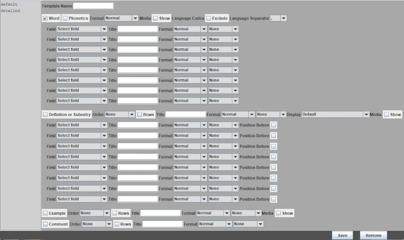
On the top left of the template dialog figure is a list of the templates that exist (for the example shown, there are two: default and detailed). There is always a default selection; you cannot delete this template, but you are free to alter it. To create a new template, choose a template name, alter the formatting choices (described below), and select the save button. The new template's name will then be added to the list. To remove a template, select the one no longer needed and then click/touch the remove button.
To alter a template, first select the template from the list. Its current specifications will then show in the body of the dialog panel. The panel has four sections; these control how words, definitions/subentries, examples, and comments will output. Note that each section contains check boxes. Make sure to select these if you want the respective items to be part of the dictionary printouts.
Under the word and definition section, there are a series of lines where you can specify specific items that could be included in your dictionary. These items show as columns when you are adding new words to the dictionary. You can choose to include all of these in our dictionary ouptut, some of them, or exclude them entirely. Each line of a field specification defines how you want them to appear in the output.
The dialog has a number of selections that we describe in the table below
| 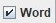 | This option is on by default. Turn it off if you don't want to display comments, ontology, or other columns that are associated with the word. This is useful for languages (like Sanskrit) that only want to show subentry details. |
| 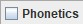 | Select this checkbox if you want the phonetic pronunciation of words to be included. |
| 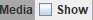 | This selection allows you to specify whether dictionary pictures should display as part of the output format. Pictures can be associated with either words, definitions, or examples. |
| 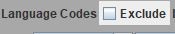 | This selection allows you to chuse whether the language codes should appear in the output. If the exclude option is chosen, it is advisable to distinguish between languages by using individual fonts. |
| 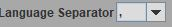 | This selection allows you to determine how you want to separate languages from one another in the output. |
| 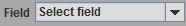 | This selection allows you to specify dictionary column fields and their order of appearance. Possible choices include: Annotations, Antonyms, Categories, Comments, Compare, Encyclopedic Info, Etymology, Frequency, Gloss, Language Links, Lexical Function, Main Entry, Morphemes, Ontology, Refer To, References, Reversals, Restrictions, Spelling, Subentry, Synonyms, Table, Thesaurus, Usage, and Variants. It is possible to select the same field more than once should you have created more than one occurrence of these fields in words of your dictionary. |
| 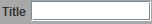 | The title field enables you to add a heading to precede the output of a particular item. Enter a \n character along with the text if you want to skip lines. Multiple \n characters are ok to further separate the output. |
| 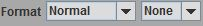 | The format menu enables you to customize the output style. Selections include normal, bold, italic, black, blue, gold, green, and magenta. To the right of this field is another drop down menu. This defines separators betwen items. For example you can select {} if you want braces to surround a particular item; you can select semi-colon to add this character to the end of an item. There are a series of other possible separators that you can choose. A space is the default separator. |
| 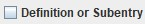 | Select this option if you want definitions or subentries to be included in the output. | 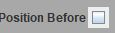 | The position field enables you to determine whether column fields should show before or after a definition. These fields will position after definitions by default. |
| 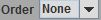 | The order selection provides flexibility in how to count multiple definitions, examples, and comments. You can order output numerically, alphabetically, or by Roman Numerals. You can also follow a count with a period, a right parenthesis, or a space. |
| 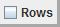 | Select this check box if you desire each definition, example, or comment to appear on a separate line. |
| 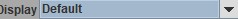 | This dropdown menu configures the order of language display. By default, the primary language shows after the translations. You can change this by selecting primary language first. |
| 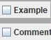 | These options are checked if you want examples and/or comments to appear in the output. |